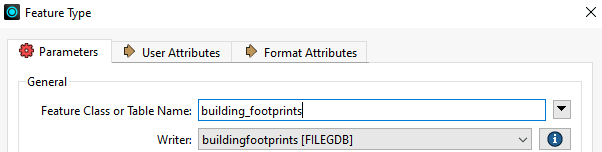
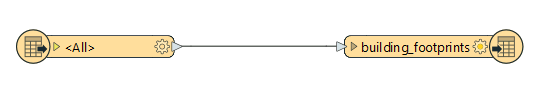
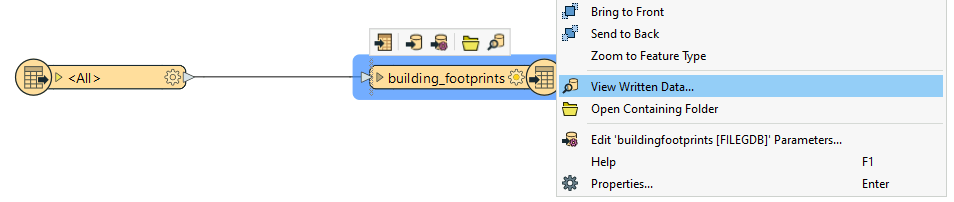

Learning Objectives
After completing this lesson, you'll be able to:
- Identify JSON elements from an incoming Trigger message.
- Configure the Automation to run a workspace in response to a Trigger using part of this message.
- Chain actions by passing an element of the incoming JSON through a filter.
Resources
Video

Introduction
As a technical analyst in the GIS department, you have realized the overhead associated with pushing manual updates to your corporate database. Having read up about Automations in FME Flow, you think that it should be possible to set up a system that automates this process.
So far you have set up a system for added file notifications to be registered by FME Flow. Now you must create a workspace to process these and publish it to FME Flow. The workspace must then be triggered by the Resource or Network Directory (updated) Trigger in Automations.
You may have noticed that the Log Action in Automations actually submits a workspace to process this request. Therefore we have already - perhaps unknowingly - covered how to set up this response. Now it's time to create a new workspace to fit in with your overall goal: to provide real-time updates to your corporate database.
1) Create Workspace
Start FME Workbench (2023.0 or later) and begin with an empty workspace.
Select Readers > Add Reader from the menu bar. When prompted set the parameters as follows:
| Reader Format |
Esri Shapefile |
| Reader Dataset |
update001.zip | C:\FMEData\Data\Engineering\BuildingFootprints\update001.zip |
| Workflow Options |
Single Merged Feature Type |
It doesn't matter what Shapefile we use as the source right now; setting the source dataset in this step is only to satisfy the shapefile reader requirements. At runtime, the source dataset will be replaced by the file path recorded in the Resource or Network Directory (updated) message.
Setting the Workflow options to Single Merged Feature Type means it will be possible to process any source dataset (of the right format) and have it translated.
2) Add Writer
Having read the data from a Shapefile, we can now add it to the corporate database.
Select Writers > Add Writer from the menubar. When prompted set the parameters as follows:
| Writer Format |
Esri Geodatabase (File Geodb Open API) |
| Writer Dataset |
C:\FMEData\Data\Engineering\BuildingFootprints\buildingfootprints.gdb (Note: download and extract this file to this path if you do not already have FMEData loaded. Once the folder is extracted, the geodatabase is located inside the extracted folder.)
|
| Writer Parameters |
Overwrite Existing Database: No |
| Add Feature Types |
Table Definition: Manual |
In the new feature type that is created, change the Table Name parameter to buildingfootprints:

Set geometry to geodb_polygon.
Ensure that the Table Handling is set to "Create If Needed". Click OK to close the dialog and then connect the new feature type to the output port of the Shapefile Reader.

3) Inspect Data
After adding the writer, run the workspace, then right-click on the building_footprints feature type to bring up the popup menu. Then click View Written Data... to open the dataset in Visual Preview.

There is already data in the building footprints layer, but we should note what the data looks like so we will know where it has changed once we update the dataset with the new data. The area within the red box will be where the new data will be added:

4) Publish Workspace
Save the workspace as exercise-process-directory-watch-messages-complete.fmw and publish it to the Training repository in FME Flow. We only need it to be run (not do anything special) so register it with the Job Submitter service.
5) Add Dataset to FME Flow
Since this Automation aims to update our database, let's ensure that it is accessible in FME Flow. To do this, we will upload the buildingfootprints.gdb file geodatabase to FME Flow's shared resources.
Use the FME Flow web interface to create a new folder Output in Resources > Data and upload the database.

6) Edit Automation
Navigate to the Automations: Manage Automations page and select Incoming Building Footprints to open the Automation for editing. Before you can make any changes stop the Automation using the button in the top right corner. Instead of adding a new action node, simply select the Log node and change the Action parameter value to Run a workspace.
Select the Training repository and workspace uploaded in the previous step. The parameters should now include one for the Source Esri Shapefile and the output database.
The source dataset must pick up the file path from the Resource or Network Directory (updated) trigger. From the drop-down menu next to Source Esri Shapefiles(s), select File Path found under the Directory folder. This drop-down list is essentially the JSON flattened into its separate components.

For File Geodatabase, browse to the Resources/Data/Output folder to locate the buildingfootprints.gdb uploaded in the previous step.:

7) Add Filter
The Esri Shapefile Reader will only accept .shp file extension types. However, the Resource or Network Directory (updated) Trigger will pass a message to the workspace for every file uploaded. To prevent the Automation from triggering database update workspaces that will fail, add a Filter action so that only the file path containing .shp is parsed to the Run Workspace action.
Select the plus icon at the bottom of the canvas and drag an internal action (orange) onto the canvas.

Move the connection lines so that the Network Directory (updated) Trigger Success Output port enters this new Action node, and the Run Workspace is connected to the Success Output port of this action.

Click on the action to configure the filter and set the Action to Filter messages. There are two parameter values required. Similar to how the Source dataset of the workspace was set, specify the File Path as the Key. In Contains, set the string to search for to .shp.

Click Apply to save the changes. Click Start Automation again to restart the automation.
8) Test Solution
Test the solution by putting update001, update002, or update003 .shp/.dbf/.shx/.prj files into the BuildingUpdates folder. If these files already exist from an earlier exercise, delete them first, then re-add them. You will find that each dataset put into the folder is added to the geodatabase.
Check the Completed Jobs page to confirm that the workspace was run. Alternatively, you can check the Automation Log or Triggered Job log to watch the progress of the Trigger > Job Submitted > Translation Successful.
9) Inspect the Output
Navigate to the Output folder in Resources and select and download the building footprints.gdb. Once it has downloaded, unzip the folder. In the FME Data Inspector, click Open, set Format to Esri Geodatabase (File Geodb Open API), click the ellipses and navigate to the buldingfootprints.gdb that was just downloaded. In the Parameters, make sure the Table is bulding_footprints. Click OK.
Depending on which update file you added, you should see one of the three buildings added to the dataset: